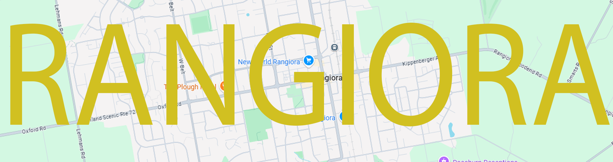

What is Rangiora?
Rangiora is the largest town in the Waimakariri District of
New Zealand’s South Island.
Located about 30 minutes north of Christchurch, it serves as a hub for the surrounding rural communities.
Originally established as a service centre for farmers, Rangiora has grown into a thriving town with a mix of
residential, commercial, and agricultural activity.
The town retains a relaxed, semi-rural charm while offering modern amenities, schools, and community facilities.
Rangiora is surrounded by fertile farmland and is close to natural attractions such as the Ashley River and
nearby beaches, making it ideal for outdoor recreation.
With strong transport links to Christchurch, Rangiora is popular among commuters seeking a quieter lifestyle
without losing city access. Continued development and investment have made Rangiora a key part of the region’s
growth, combining small-town character with a forward-looking approach.
Map of Rangiora